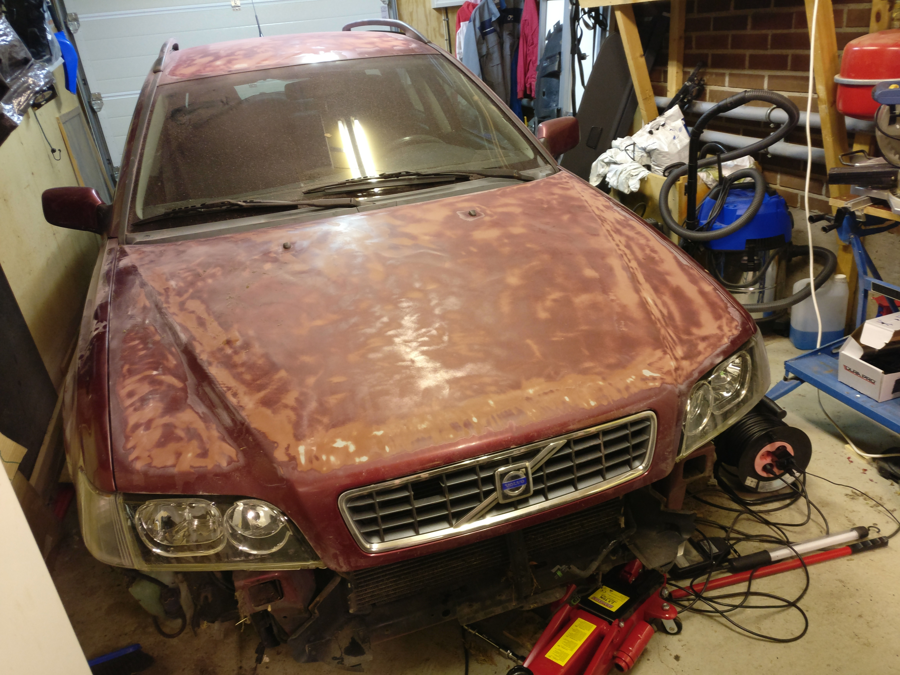

Här kan du se mina nuvarande projekt

Ovan är en bild på min bil som jag just nu håller på att renovera.
Bilen har varit i min familj länge och klarlacken hade börjat flagna, vilket ledde till nerslipning av lacken och lackering, som är planerad till sommaren.
Färgen är fortfarande inte helt bestämd men det lutar mot antingen färgen "polestarblå" eller någon nyans av grå.
Målet är att bli färdig lagom i tid till mitt körkort
Bilen är för övrigt en Volvo V40 Fas2, modellår 2003. Motorn är en 4-cylindrig turbomotor på 2 liter, med en effekt på 165hk.
Hopplösa Egon är ett projekt jag har tillsammans med en klass kamrat, Marcus Pålsson.
Det hela började med att jag hade tråkigt på fysiken, jag sketchade upp tre figurer och nyfiken som Marcus är så kom han fram och tog en titt.
Vi kom överrens att den första skulle heta Frank, den andra Egon och den tredje Benita.
Några veckor senare så diskuterade Marcus och jag om vi skulle göra en serie, och resten är historia...
Målet är att bli färdig lagom i tid till mitt körkort
Bilen är för övrigt en Volvo V40 Fas2, modellår 2003. Motorn är en 4-cylindrig turbomotor på 2 liter, med en effekt på 165hk.
Hopplösa Egon är ett projekt jag har tillsammans med en klass kamrat, Marcus Pålsson.
Det hela började med att jag hade tråkigt på fysiken, jag sketchade upp tre figurer och nyfiken som Marcus är så kom han fram och tog en titt.
Vi kom överrens att den första skulle heta Frank, den andra Egon och den tredje Benita.
Några veckor senare så diskuterade Marcus och jag om vi skulle göra en serie, och resten är historia...